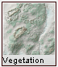
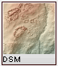
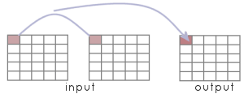
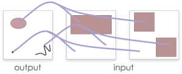
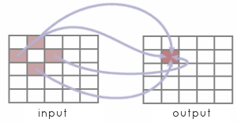
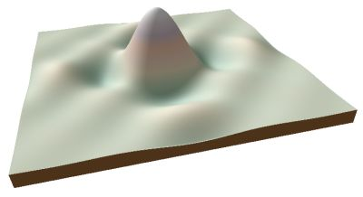

LandScript is made up of commands and functions that operate on numbers, text and spatial objects.
The layout of script on the page is flexible and is designed to make reading script as easy as possible. Script can be spread over
multiple lines with each instruction being terminated with a semicolon';'.
All non-blank lines in a script file will be interpreted by LandSerf's script engine except those that start with the
hash symbol '#'. This symbol can be used to identify comment lines that help to explain the meaning of
the script.
So, for example, the two scripts shown below are treated in exactly the same way even though their layout and comments differ.
1 2 3 4 |
# Simple script to display a message on screen. version(1.0); echo("Hello world"); |
1 2 3 4 5 6 |
version(1.0); echo # This is a comment line so it is ignored. ("Hello world"); # Layout is flexible, but each command line # must be terminated with a semicolon. |
LandScript is a case sensitive language, and by convention, all variables, functions and commands are given lower case letters (an exception is the intercapping of variable names described below).
It is possible that commands, functions or even syntax may change in future versions of LandScript. It is therefore
good practice to include the version() command at the start of a script. This will ensure that the
LandScript interpreter will always process the script in the way it was originally intended.
Variables can be used to store items of information. There are 3 types of information that can be stored - numbers, text and spatial objects. LandScript is not a strictly typed language, which means that you do not need to declare what type of information is to be stored in a variable, and the type of information it does store can change while a script is running.
Information is placed in variables using the assignment operator '=', where the code on the left
of the = should be name of the variable to store the information, and the code on the right should
be an expression that defines what is to be stored within it.
1 2 3 4 5 6 7 8 9 10 |
# Script to show multiple variable types. version(1.0); message = "Hello World"; echo(message); message = 1+2+3; echo(message); myRaster = newraster(0,0,10,10,100,100); |
In the example above, the variable message firstly stores a text string ("Hello World").
Text strings can be indicated with pairs of quotation marks (") surrounding the text. The next line in the
example replaces the contents of the same variable with the result of evaluating the expression 1+2+3 (the
number 6). Finally a separate variable myRaster is used to store an entire raster map created by the
command newraster().
Variable names must start with alphabetic characters but can contain numbers (e.g. answer1, map2006 etc.).
They cannot contain spaces or non-alphanumeric characters. By convention, variable names should be lowercase except when they
consist of compound words, in which case intercapping (capitalising of the first letter of subsequent words) is encouraged. For
example myRaster, forestMap.
Variables can also appear on the right hand side of the assignment operator, but only if they have been previously defined:
1 2 3 4 5 6 |
# The following two lines are valid total = 0; total = total+1; # But the following would generate the error "'newTotal' not found". newTotal = newTotal + 1; |
The scope of a variable describes the parts of code in which its contents can be read or changed. Scope
is limited to the block of code in which it is first assigned. A block (see section 3 below), is usually
defined as any code enclosed between braces { and } including any nested sub-blocks
within it.
1 2 3 4 5 6 7 8 9 10 11 12 13 14 15 16 |
# var1 is first defined in the global block so is visible to the whole script. var1 = "Global variable"; { # This is a sub-block so var2 is only visible within this block # Note also that variables defined in the 'parent' block(s) of # a sub-block are also visible. var2 = "Local variable"; echo ("Var1 is " & var1 & " Var2 is " & var2); # This will change the contents of the global variable originally defined outside this block. var1 = "A new value"; } # The following line would now generate an error since var2 is not visible. echo ("Var1 is " & var1 & " Var2 is " & var2); |
Variables that are defined in the outermost block (as var1 in the example above) are effectively
global variables as their values can be read and changed in all parts of the script. The LandScript
ScriptEditor identifies such global variables by colouring them mid-grey. It is generally good practice
to make variables as local as possible within a script to avoid the possibility of accidentally changing variable
contents and to limit naming conflicts.
An expression is any collection of quantities (numbers, text or spatial objects) and operators that can be evaluated by the LandScript interpreter to produce a new quantity. The following are all examples of expressions:
1 2 3 4 5 6 |
numeric1 = 1 + (2/3) * 4; numeric2 = sin(pi()/3); numeric3 = numeric1 + 2*numeric2; text1 = "First pair. " & "Second pair."; spatial1 = newraster(5,5,15,15,100,100); spatial1 = spatial1 + 5; |
# Evaluated as 3.6666666666666665 (note rounding error in last digit) # Evaluated as 0.8660254037844386 # Evaluated as 5.398717474235544 # Evaluated as the text 'First pair. Second pair.' (without quotes) # Evaluated as a raster of 100x100 cells each containing 0 # Evaluated as a raster of 100x100 cells each containing 5 |
When LandScript code is interpreted, it is normally done line-by-line starting from the top of the script.
However, it is possible to modify the flow of program control using loops, conditional blocks
and the return command.
Loops are created using the command while followed by a condition
in brackets and terminated by a semicolon. The condition can be any expression that can be evaluated to be
true/non-zero or false/zero. The code to be repeated in the loop is then enclosed in braces following the
while line. Because the looped code is defined in its own block, any variables defined for the first time
inside the loop, are only visible within it.
1 2 3 4 5 6 7 8 9 |
version(1.0); tableRow = 1; while (tableRow <= 10); { echo(tableRow & " x 7 = " & tableRow*7); tableRow = tableRow + 1; } |
1 x 7 = 7 2 x 7 = 14 3 x 7 = 21 4 x 7 = 28 5 x 7 = 35 6 x 7 = 42 7 x 7 = 49 8 x 7 = 56 9 x 7 = 63 10 x 7 = 70 |
The script above left generates times-table output shown to the right. You must take care to ensure that it is possible
for the loop to terminate in a finite amount of time. In the example above this is ensured by adding 1 to the value of
tableRow each time control loops round the code in braces.
Note that if you are used to programming in languages such as C++ or Java, the while
line must always be terminated with a semicolon and the looped code itself must always be enclosed in braces even if it only
contains a single line. Note also that there is no 'for' loop in LandScript. This can be represented instead with a
while loop and a counter variable as shown in the times-table example above.
return statement
A conditional block is identified with the if keyword followed by a
condition in brackets and terminated by a semicolon. It works in much the same way as a while loop, except that
the code within braces is only run once if the condition is evaluated to be true or non-zero. As with any block of script,
the scope of any variables defined for the first time within a conditional block is limited to that block.
1 2 3 4 5 6 7 8 9 10 11 12 13 14 |
# Script to toss a coin. version(1.0); randomNum = rand(); if (randomNum < 0.5); { echo("Heads"); } if (randomNum >= 0.5); { echo("Tails"); } |
In the simple example above, two conditional blocks are used to simulate the outcome of a randomly tossed coin. Note that there is no 'else' construction in LandScript, so if mutually exclusive actions have to be modelled (as in the coin example above), you must explicitly state the mutually exclusive conditions.
It is possible exit a script early using the return keyword. When not used
inside a script function (see section 5 below), calling return will quit the
script, so it is most likely to be used inside a conditional block. For example,
1 2 3 4 5 6 7 8 9 10 11 12 13 14 15 16 17 18 19 20 |
# Creates a raster containing the z scores of another raster. version(1.0); baseDir = "z:\data\testdata\"; surf =open(baseDir&"nyquist.srf"); zScores = new(surf); mean = info(surf,"mean"); stdev = info(surf,"stdev"); if (stdev == 0); { echo ("Raster has no variation, so cannot calculate z-scores."); return; } zScores = (surf-mean)/stdev; colouredit(zScores,"diverging1"); save(zScores, baseDir&"zScores.srf"); |
The conditional block from lines 11-15 first checks to see if there is any variation in the attribute values contained in the raster. If there is no variation (ie the standard deviation is zero), it reports an error message and exits the script at line 14. If there is some variation, control passes to line 17 and beyond.
You can create your own functions (also known as methods or subroutines) in LandScript in order to group together
the lines of code required to perform common tasks. User-defined functions should be indicated with the function
keyword followed by the name of the function you wish to define and any parameters it requires. Following this line should be
a block of code in braces that defines what the function actually does.
Functions can optionally return a value that can be used by the main body of the script in further processing. If the value is numeric, this can be combined with other built in functions to form more complex expressions.
1 2 3 4 5 6 7 8 9 10 11 12 13 |
# Script to show how a simple function works version(1.0); echo ("The sum of the numbers is "&sum(3,4)); # Function to add two numbers together. # Params: num1 First number to add. # num2 Second number to add. # Return: Sum of the two given numbers. function sum(num1, num2) { return num1+num2; } |
Functions that do not return a value, but instead perform some specific task can also be useful, For example, the following displays the metadata associated with a raster map:
1 2 3 4 5 6 7 8 9 10 11 12 13 14 15 16 17 18 19 20 21 22 23 24 25 26 |
# Script to display the metadata associated with a raster. version(1.0); baseDir = "/data/testdata/"; newRaster = open(baseDir & "xslope.srf"); ans = displayInfo (newRaster); # Function to display raster metadata. # Params: rast Raster whose metadata is to be reported. function displayInfo(rast) { echo("Metadata for "&info(rast,"title")); echo("Bounds:"); echo(" "&info(rast,"N")); echo(info(rast,"W")&" "&info(rast,"E")); echo(" "&info(rast,"S")); echo("Minimum: "&info(rast,"min")&" Maximum: "&info(rast,"max")); echo("Resolution - x: "&info(rast,"xRes")&" y: "&info(rast,"yRes")); echo("Projection: "&info(rast,"projection")); echo("Type: " & info(rast,"type")); echo(info(rast,"notes")); } |
Functions can also recursively call themselves to provide very powerful processing constructs. In the example below, a simple recursive function calculates the factorial of any given number (the factorial of 6 is 6*5*4*3*2=720).
1 2 3 4 5 6 7 8 9 10 11 12 13 14 15 16 17 18 19 20 21 22 23 |
# Script to calculate factorials using a recursive function. version(1.0); number = 6; answer = factorial(number); echo ("Factorial of " & number & " is " & answer); # Function that recursively calculates the given number's factorial. # Params: num Number to calculate # Return: The given number's factorial. function factorial(num) { if (num <= 1); { return 1; } if (num > 1); { ans = factorial(num-1); return ans*num; } } |
Note how line 20 inside the factorial() function recursively calls itself substituting num-1 for the original
value of num. Care should always be given when writing recursive functions that they always have a 'get-out clause' enabling
control to be returned from the function.
Probably the simplest approach to using LandScript is as a way of repeating a sequence of actions that would otherwise be achieved using menu selection in LandSerf. This has the advantage of be reproducable and sharable between users, although it does not take advantage of some of the more sophisticated functionality of the language.
When used as a macro language, most of the LandScript code will be calls to the LandScript commands providing the values that would otherwise be entered via the LandSerf Graphical User Interface. So for example, to load a file, change its projection and colour table and save a copy of the edited object, the following commands could be issued:
1 2 3 4 5 6 7 8 9 10 11 12 13 14 15 16 17 18 |
# Script to demonstrate simple macro processing. version(1.0); baseDir = "/data/testdata/"; # Open file. rast = open(baseDir&"rast.srf"); # Add projection metadata and reproject. edit(rast,"projection","LatLong"); edit(rast,"ellipsoid","WGS 84"); newRast = reproject(rast,"UTM","true",30,30); # Provide new colour table colouredit(newRast,"land3"); # Save the new file. save(newRast,baseDir&"rastUTM.srf"); |
Map algebra is an attempt to formalise the way we can combine and process spatial data. The concept comes from the work of Dana Tomlin (Tomlin 1983, 1990) who proposed a platform independent way of recording spatial processing. The concept is a simple one: represent spatial objects as algebraic terms and allow those terms to be manipulated using mathematical and logical operators.
For example, suppose we had two elevation models of the same area, one generated via remote sensing that represents the upper
surface of a region (which we will call DSM), the other generated via the interpolation of contours (which we will
call DGM). The difference in height between these two models would give us the height of all the features, such as
trees and hedges, that sit on top of DGM and have been recorded in the DSM. In map algebra terms, this can simply be represented as
|  | = |  | - | |
| Vegetation | = | DSM | - | DGM |
All map algebra operations can be expressed in the form
newObject = f([Object1], [Object2], [Object3]...)
In other words new spatial objects are created as a function of existing objects. These objects may be raster or vector maps.
Depending on what is used as input to a map algebra operation, two broad categories of function can be considered.
|  | Local operations usually take input from at least two spatial objects. The output for
any location is a function of the input objects at that same location. An example of a LandScript local operation
applied to a pair of raster maps might be:
|
|
|  | Applying local map algebra to vector maps works in a similar way except that the output map must first be created
so that the vector objects that are to have new attributes may be defined. In other words, applying map algebra to
vector objects has no effect on their geometry, but their attributes are a function of the input objects
that share the same spatial location as the output objects. In LandScript, the centroid of each output object is used
to define their locations.
Both raster and vector maps may be combined in a single local map algebra expression. So for example, the following expression effecitvely creates a rasterized version of combined vector maps summing their contents where the vector maps overlap.
|
|
|  | Focal operations usually take input from several locations in a single spatial object.
The output for any location is a function of the input object at points surrounding the output location. Such
functions are often referred to as neighbourhood operations since they process the neighbourhood of location in
order to generate output. LandScript can only apply focal operations to rasters and allows neighbouring raster cells
to be identified using a focal modifier in square brackets containing row and column offsets. For example:
|
More sophisticated use of focal modifiers can be made by combining them with conditional operations. In the example
below, the nested ifselse commands in lines 22-26 copy all the non-null raster cells from one raster map
to another as well as those that immediately border non-null cells. The result is a that islands are 'grown' by one
cell. By using a local map algebra operation (line 30) to find the difference between the original and expanded rasters,
an additional 'coastline' map containing only the new border cells can be created.
1 2 3 4 5 6 7 8 9 10 11 12 13 14 15 16 17 18 19 20 21 22 23 24 25 26 27 28 29 30 31 32 33 34 |
# Creates some fractal islands, then grows the coastlines by 1 pixel. version(1.0); baseDir = "/data/testdata/"; # Create empty raster. fracSurf = newraster(1000,1000,10,10,250,250,"Fractal"); # Fill raster with fractal surface. fractal(fracSurf,"2.01"); islands = new(fracSurf); # Use data range to get 'sea level'; maxi = info(fracSurf,"max"); mini = info(fracSurf,"min"); midPoint = mini + (maxi-mini)/2; # Flood all values below 'sea level' fracSurf = ifelse(fracSurf < midPoint, null(), fracSurf); # Grow coastline islands = ifelse(fracSurf != null(), fracSurf, ifelse(fracSurf[0,-1] != null(), fracSurf[0,-1], ifelse(fracSurf[0,1] != null(), fracSurf[0,1], ifelse(fracSurf[-1,0] != null(), fracSurf[-1,0], ifelse(fracSurf[1,0] != null(), fracSurf[1,0],null()))))); # Find coastline by taking difference between original and grown islands. coastline = new(fracSurf); coastline = islands-fracSurf; # Save original and expanded islands. save(islands,baseDir & "islands.srf"); save(coastline,baseDir & "coastline.srf"); |
When creating a local map algebra expression, it is sometimes useful to be able to identify a complete spatial object rather than a particular cell value. This is especially so when including LandScript commands in an expression. For example, suppose we wished to add mean value of a raster to each cell in a raster. If we tried to do this with the following expression:
1 2 3 |
dem = open("myRaster.srf"); dem = dem + info(dem,"mean"); |
LandScript would generate the error: Expecting spatial object as parameter 1 in info but number provided.
This is because second occurence of dem on the right hand side of the expression in line 3 is interpreted as being
part of a local operator that would take each cell in turn and process its numeric value. What we actually intended was for the
info() command to treat that particular instance of dem as a single raster rather than process each of
its cells. To force this to happen, simply place an underscore character (_) after the name of the raster:
1 2 3 |
dem = open("myRaster.srf"); dem = dem + info(dem_,"mean"); |
In this particular example, it would have been more efficient to store the mean of the dem values once in its
own variable rather than calculate the same mean for every cell in the raster:
1 2 3 |
dem = open("myRaster.srf"); mean = info(dem,"mean"); dem = dem + mean; |
Keeping code efficient in map algebra expressions is important if you wish your scripts to execute in a reasonable length of time. But there are some circumstances when the use of the underscore character to stop local map algebra operations being performed is necessary. For example, calling a LandScript command whose output is to replace one of the input parameters in that expression:
1 |
raster = reproject(raster_,"UTM","true",50,50); |
Without the underscore, LandScript would incorrectly interpret this expression as a local operator as it contains a spatial object
variable (raster) on the left and right hand side of the equals symbol.
Finally, the special variables easting, northing, row and col can be used
in map algebra expressions to substitute the location coordinates of each cell in a spatial object into the expression itself.
So in the example below, a mathematical function based on the (x,y) coordinates of each cell (line 7) is used to create a new surface:
1 2 3 4 5 6 7 8 9 10 11 12 13 14 15 16 17 18 |
# Script to create a Nyquist sampling function. version(1.0); baseDir = "/data/testdata/"; nyquist = newraster(-100,-100,1,1,201,201); nyquist = 10* (sin(easting/10) / (easting/10)) * (sin(northing/10) /(northing/10)); # Add metadata. edit(nyquist,"title","Nyquist"); edit(nyquist,"notes", "Nyquist sampling model based on the 2-d sinC function "& "((sin PI x / PI x)(sin PI y / PI y) )"); edit(nyquist,"type","elevation"); colouredit(nyquist,"land4"); # Save the new raster map. save(nyquist,baseDir&"nyquist.srf"); |

Nyquist sampling function produced by landscript.
There may be some special cases where map algebra expressions do not provide sufficient control over operations to produce the desired output. In such circumstances, it is possible to use LandScript looping and conditional contructions with LandScript commands to process spatial objects in a low level fashion.
The disadvantage of this approach is that it can be considerably slower than using map algebra, and certainly much slower than using the LandSerf API to code a routine in Java or some other low level language.
Most lower level processing of a raster object will need to use two nested loops to select each raster cell in turn. The example
below shows how this can be achieved in LandScript. Note that this particualar example simply does what would more readly be
achieved with the single map algebra expression newRast = rast1 + rast2;
1 2 3 4 5 6 7 8 9 10 11 12 13 14 15 16 17 18 19 20 21 22 23 24 25 26 27 28 29 30 31 32 33 34 35 36 37 |
# Script to add the contents of two rasters. version(1.0); baseDir = "/Users/jwo/data/testData/"; # Create the two input rasters and one output raster. rast1 = newraster(0,0,1,1,100,100,"Fractal 1"); fractal(rast1,"2.01"); rast2 = newraster(0,0,1,1,100,100,"Fractal 2"); fractal(rast2,"2.01"); newRast = new (rast1); edit(newRast,"title","Sum of rast1 and rast2"); # Store dimensions of the rasters numRows = info(newRast,"numRows"); numCols = info(newRast,"numCols"); # Process each raster cell individually. r=0; while (r < numRows); { c=0; while (c < numCols); { z1 = rvalueat(rast1,r,c); z2 = rvalueat(rast2,r,c); rvalueat(newRast,r,c,z1+z2); c = c+1; } r = r +1; } # Save new raster. colouredit(newRast,"grey1"); save(newRast,baseDir&"newRast.srf"); |
The key to being able to extract individual raster values is the landsript command rvalueat() which is able
to extract the raster value at a given row and column coordinate (lines 27 and 28 above) as well as set a new raster value
for a given cell (line 29 above). By calling this command inside two nested loops that process each column in the rasters
row by row, all the raster cells may be processed.
The code above is not particuarly useful in that is simply replicates the process more easily achieved with map algebra. However, for more sophisticated processing, such as recursive traversal of a raster, this approach can be useful:
1 2 3 4 5 6 7 8 9 10 11 12 13 14 15 16 17 18 19 20 21 22 23 24 25 26 27 28 29 30 31 32 33 34 35 36 37 38 39 40 41 42 43 44 45 46 47 48 49 50 51 52 53 54 55 56 57 58 59 60 61 62 63 64 65 66 67 68 69 70 71 72 73 74 75 76 77 78 79 80 81 82 83 84 85 86 87 88 89 90 91 92 93 94 95 96 97 98 99 100 101 102 |
# Script to calculate flow magnitude of a DEM. version(1.0); basedir = "/data/testdata/"; # Initialise flow magnitude and drainage basin rasters. dem = open(baseDir&"newRast.srf"); aspect = surfparam(dem,"aspect",3); flowMag = new(dem); basins = new(dem); basinID = 0; edit(flowMag,"title","Flow magnitude"); edit(flowMag,"type","other"); edit(basins,"title","Drainage basins"); edit(basins,"type","other"); numRows = info(dem,"numRows"); numCols = info(dem,"numCols"); r=1; while (r < numRows); { echo("Processing row " & r); c=1; while (c < numCols); { basinID = r*numCols+c; localFlow = calcFlowMag(r,c); rvalueat(flowMag,r,c,localFlow); c = c +1; } r = r +1; } # Provide logarithmic colour scale for flow magnitude. colouredit(flowMag,"exp1"); # And a random colour table for drainage basins. colouredit(basins,"random"); # Save flow magnitude and drainage basins. save(flowMag,baseDir&"demFlowMag.srf"); save(basins,baseDir&"demBasins.srf"); endTime = datetime(); echo ("Completed in "&(endTime-startTime)/10 &"seconds."); # Recursive flow magnitude function. function calcFlowMag(r,c) { # Check we haven't been here before visitedCell = rvalueat(basins,r,c); if (visitedCell == basinID); { # We have already visited this cell during this pass. return 0; } flow = 1; # Log this cell as belonging to the drainage basin. rvalueat(basins,r,c,basinID); # Stop if we have reached the edge. if ((r==0) or (c == 0) or (r >= numRows-1) or (c >= numCols-1)); { return flow; } # Look for neighbours that might flow into this cell. aspVal = rvalueat(aspect,r-1,c); if ((aspVal >135) and (aspVal <=215)); { fl = calcFlowMag(r-1,c); flow = flow +fl; } aspVal = rvalueat(aspect,r+1,c); if ((aspVal >305) or ((aspVal <=45) and (aspVal != null()))); { fl = calcFlowMag(r+1,c); flow = flow +fl; } aspVal = rvalueat(aspect,r,c-1); if ((aspVal >45) and (aspVal <= 135)); { fl = calcFlowMag(r,c-1); flow = flow +fl; } aspVal = rvalueat(aspect,r,c+1); if ((aspVal >215) and (aspVal <= 305)); { fl = calcFlowMag(r,c+1); flow = flow +fl; } return flow; } |
Brun, H.T. and Egenhofer, M.J. (1997) User interfaces for map algebra. Journal of the Urban and Regional Information Systems Association, 9(1), pp.44-54
Tomlin, C.D. (1983) A map algebra. Proceedings of the 1983 Harvard Computer Graphics Conference, Cambridge MA
Tomlin, C.D. (1990) Geographic Information Systems and Cartographic Modelling. Englewood Cliffs, HJ: Prentice-Hall